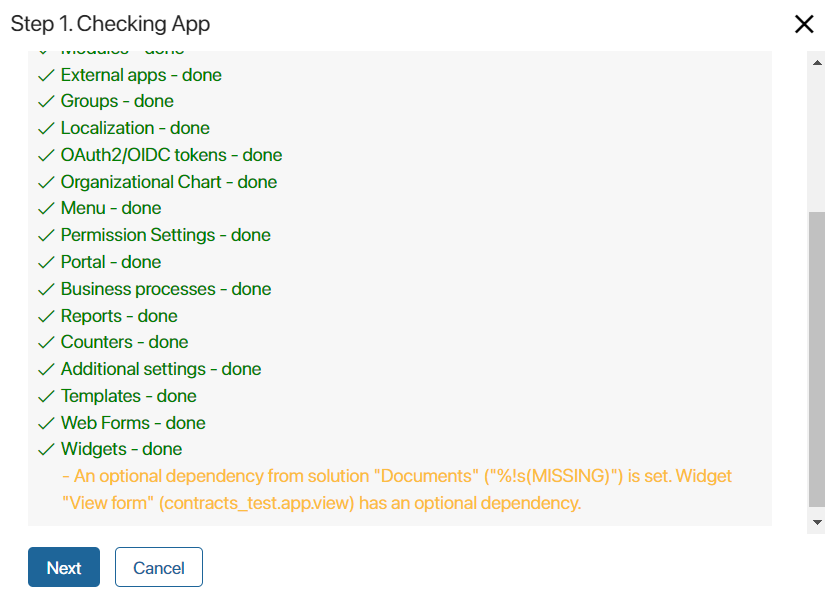

The Global, Namespace, and Imports global constants can be used in scripts within widgets, business processes, and modules. They allow access to:
Global. All workspaces as well as global parameters.Namespace. All apps, business processes, and other components within the workspace.Imports. Selected workspaces or modules with which an optional dependency is set up in the script settings. Using theImportsconstant in a script does not restrict the export of the component or its import to another company. Therefore, making links to workspaces or modules usingImportsis suitable for solution development.
For components created within the company, the Global constant is always available in scripts. In components created within workspaces, apps, or modules, access to the Global, Namespace, and Imports constants needs to be enabled in the script settings.
The use of global constants can be enabled:
- For widgets: on the Settings tab of the interface designer.
- For business processes: on the Scripts tab of the business process designer.
- In modules: in the module settings, in the following objects:
To learn about using the Global and Namespace constants, see the Global context and isolation article in BRIX TS SDK. The use of the Imports constant is described in the Optional dependencies article.
Export components with global constants
Note that the use of global constants affects the export of system components, namely:
- If a script contains the
Globalconstant, the script cannot be exported. Therefore, the export of any system component (workspace, app, module) in which the script is applied is unavailable. - If the script within an app contains the
Namespaceconstant:
- Export of the app is not available.
- Export of the workspace where this app is located is available. The exception is the export of a system workspace as part of a solution. This type of export is performed individually for each app, and is therefore not available.
- If the script contains the
Importsconstant, a non-critical warning about an optional dependency will be displayed when exporting the component in which it is located. The component is linked to a specific workspace or custom module, but the export can be successfully completed.

When importing the component, a similar warning will be displayed. Import can be completed even if the company does not have a component with which the optional dependency is set. However, scripts that use the Imports constant may not work correctly if the dependency is not found.
During development, it is recommended to add a block of code that is executed if the selected workspace or module cannot be accessed. For example, to provide a clear error message for the user.
Moreover, you can create a solution with the component in which a script with the Imports constant is written and the workspace or module with which an optional dependency is configured.
Note: The Imports constant is not available in system versions below 2023.11. To learn how to make the solution compatible with earlier versions, see the Optional dependencies article.
Found a typo? Select it and press Ctrl+Enter to send us feedback